browser instruments & toys. tap anything.
small machines for hearing how music works — ratio, rhythm, illusion.
they run right here, in the browser. no installs, no accounts, nothing collected by this site · clock's shared sessions use a public peerjs relay.
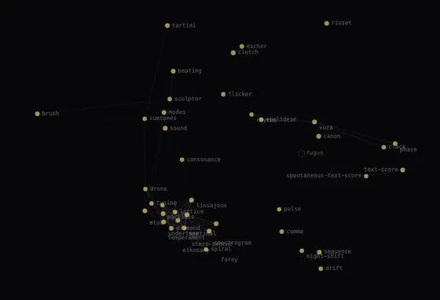
the nest · start here a map of the whole clutch. every egg scored along eight conceptual dimensions, the space flattened to a plane. distance is kinship. the hollow one isn't built yet.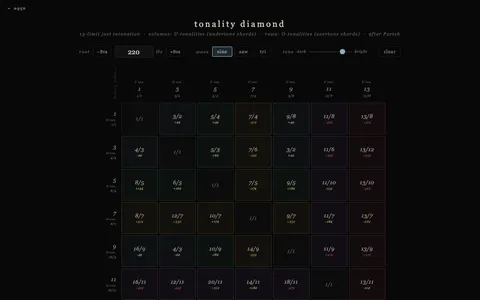
diamond Partch's tonality diamond · 13-limit JI · O-tonalities × U-tonalities · 41 pure ratios · click chords by row or column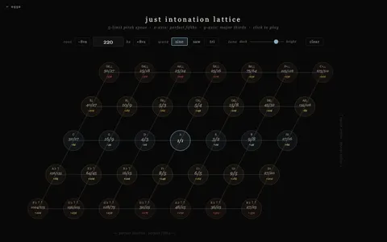
lattice 5-limit JI lattice · click to build chords · perfect fifths × major thirds · 35 pure ratios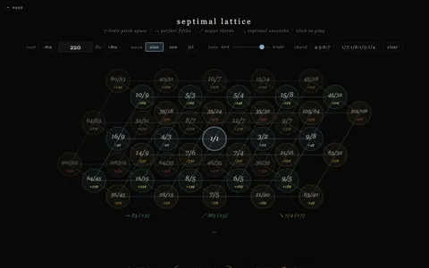
septimal 7-limit oblique lattice · three axes: perfect fifths · major thirds · septimal seventh · 45 pure ratios · one tap for 4:5:6:7 or its mirror 1/7:1/6:1/5:1/4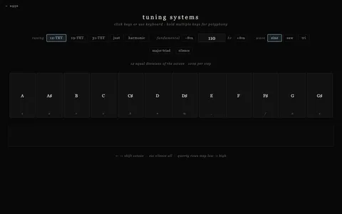
tuning microtonal keyboard · 12-TET · 19-TET · 31-TET · just intonation · harmonic series · hold a major triad and switch systems: its third is 400.0¢, 378.9¢, 387.1¢, then 386.3¢ just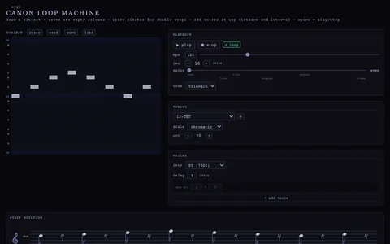
canon canon loop machine · draw a melody · add voices at any delay and interval, each on a pitch the tuning actually has · 12-TET, 19-EDO, 24-EDO, 31-EDO · DCA scale · Kirnberger III, Vallotti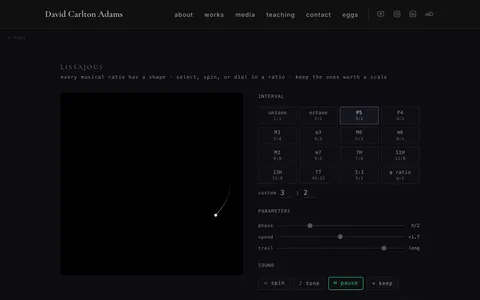
lissajous interval figures · two sines at a ratio trace one curve · 3:2 closes, φ:1 never does · spin a ratio, keep and play a scale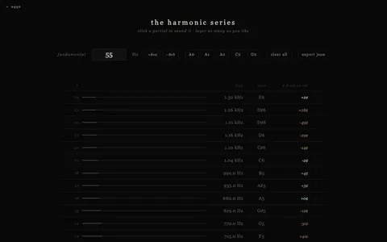
partials harmonic series explorer · 24 partials over any fundamental from 20 Hz to 4 kHz · each one's distance from 12-TET in cents · layer and listen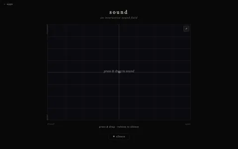
sound press and drag a 55 Hz sawtooth through a resonant lowpass · horizontal sweeps the cutoff from 45 Hz to 18 kHz · vertical sets level and resonance · release to silence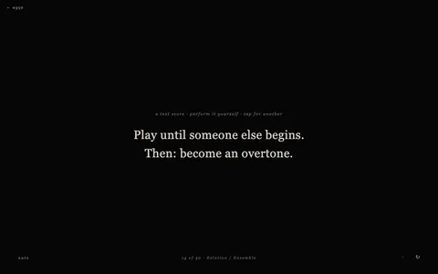
text-score performance instructions · random · ?n=14 loads a specific one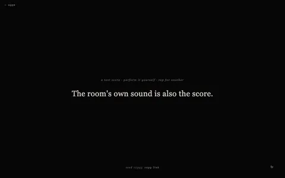
spontaneous-text-score procedural score generator · drawn from the vocabulary of the practice · shareable by URL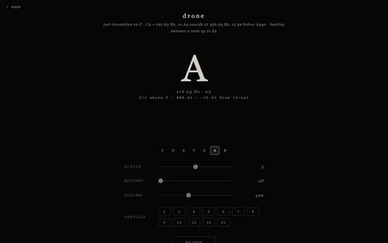
drone just intonation on C, so A4 sounds at 436.05 Hz · a twin detuned up to 8¢ beats against it · 12 partials up to the 21st · C D E F G A B, octaves 1 to 5, letter keys play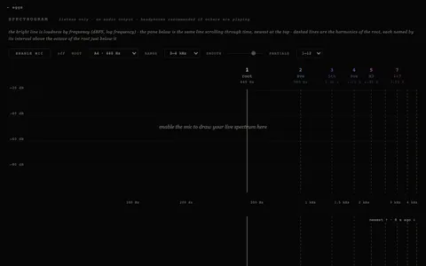
spectrogram mic input · live spectrum and an 8-second scrolling spectrogram · harmonic markers for a chosen root, loudest peak named in cents · listens only, no audio output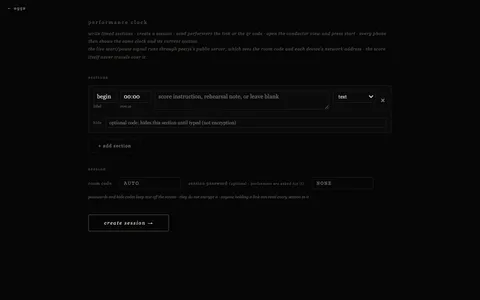
clock shared performance clock · define sections · the conductor starts it and every device runs the same schedule off its own wall clock · drag-drop images · shareable QR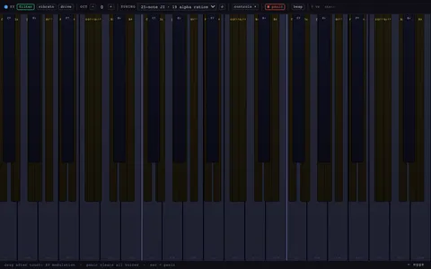
mtok microtonal keyboard · 25-note JI gamut, 19 of its ratios from the house “alpha” set · per-note XY expression · play on tablet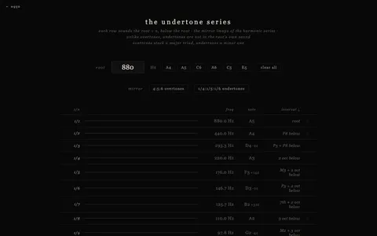
undertone subharmonic series · the mirror image of the overtone series · where overtones give major, undertones give minor · hear 4:5:6 against 1/4:1/5:1/6 on the same root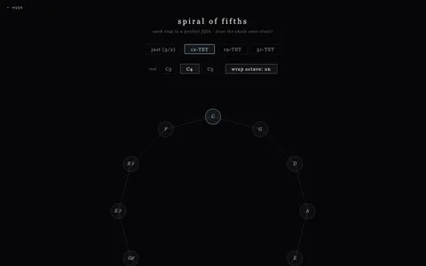
spiral spiral of fifths · 12-TET closes · just intonation doesn't · see the Pythagorean comma · toggle 19-TET and 31-TET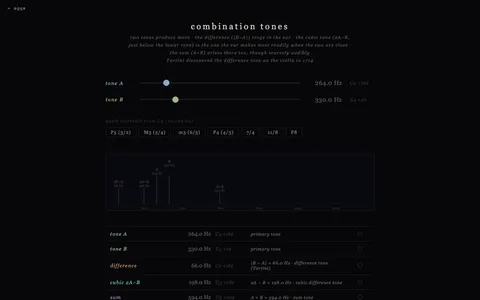
sumtones combination tones · two pitches produce more · difference tone (Tartini's discovery) · the cubic tone 2A−B · sum tone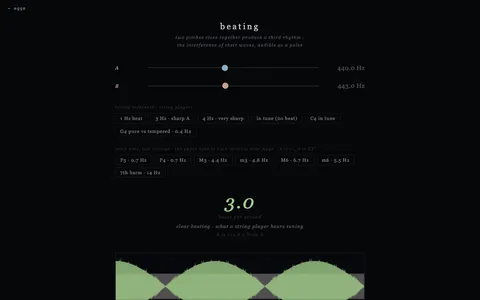
beating two close pitches produce a third rhythm · the interference waveform · what string players hear when tuning · dyad mode gives each tone 8 harmonics and beats where their partials meet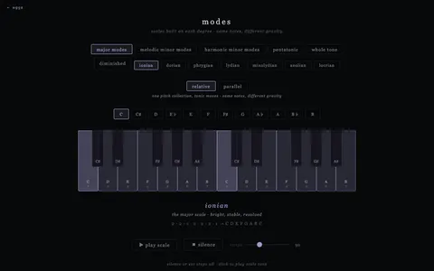
modes major modes · melodic minor modes · harmonic minor · pentatonic · whole tone · diminished · same notes, different gravity · toggle to the parallel reading for same gravity, different notes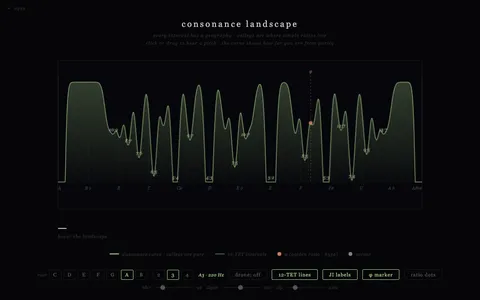
consonance a dissonance landscape · every interval plotted by ratio simplicity · simple ratios cut valleys, the gaps between them stand up · φ sits on the high ground · drag to hear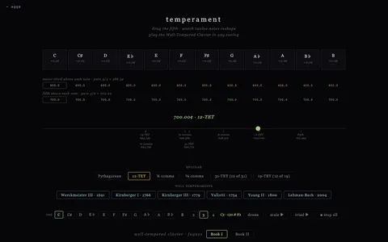
temperament drag the fifth · watch twelve notes reshape · Pythagorean · meantone · well temperament · every key's third and fifth, wolves flagged · play the WTK fugues in any tuning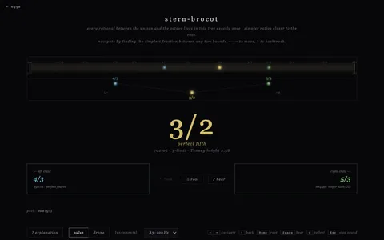
stern-brocot every rational between the unison and the octave, exactly once · the tree that generates all JI ratios · navigate by ear · collect a grab bag and play it · dwell or resolve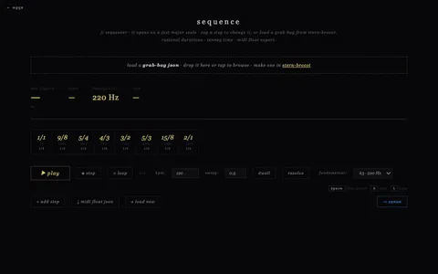
sequence JI sequencer · opens on a just major scale · tap a step to edit it, or load a grab bag from the tree · dwell or resolve · export midi float json or send it to canon in 31-EDO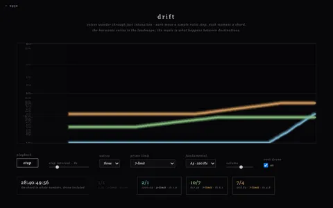
drift generative ambient · pure JI ratios drifting slowly · lets the tuning breathe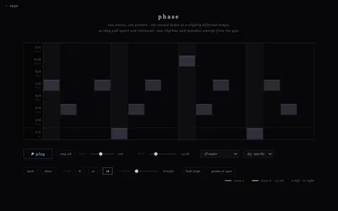
phase two voices, one pattern, a on the left and b on the right · b drifts at a slightly different tempo and new rhythms emerge from the collision · lock steps holds each new alignment for two passes, as in Piano Phase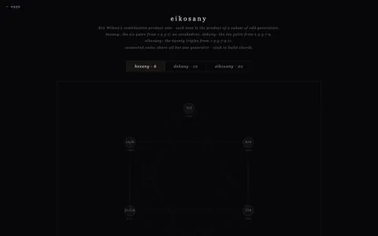
eikosany Erv Wilson's combination product sets · hexany · dekany · eikosany · each tone the product of a subset of odd generators · click to build chords, or play the set's own harmonic and subharmonic chords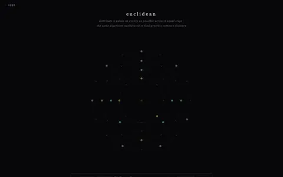
euclidean four layered rhythmic rings · E(n,k) distributes pulses as evenly as possible · the same algorithm as the GCD · one tap fills a ring with tresillo, cinquillo, bossa nova, samba, aksak or ruchenitza · each ring rotates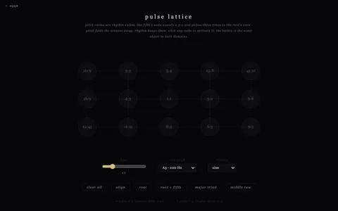
pulse lattice pitch ratios are rhythm ratios · the same mathematics that names a perfect fifth (3∶2) also names a polyrhythm · click nodes on a JI lattice to hear both the interval and the polyrhythm at once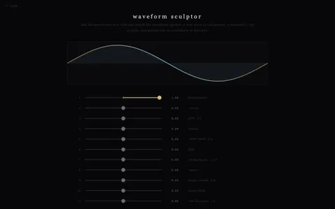
waveform sculptor add harmonics one at a time and watch the waveform appear · a sine wave is one partial · a sawtooth is all of them · presets: sine, sawtooth, square, triangle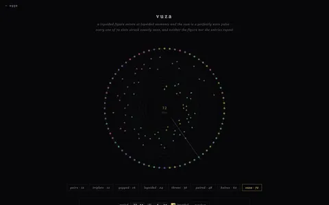
vuza rhythm canons that tile time · a 6-note figure enters 12 times and the sum is a flat pulse of 72, every slot struck once · neither the figure nor its entries repeat, and 72 is the smallest period where that is possible · seven smaller canons for contrast, or roll a random one, or type your own figure and the page searches for entry patterns that tile it (up to 400) · drag a ring to break the tiling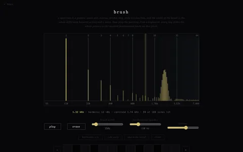
brush paint a spectrum and hear it · 169 sines, 24 per octave, seven octaves from 55 Hz · a narrow stroke is a tone, a wide one is a cluster, beating slowly in the bass and buzzing in the treble · then play the painting from a midi keyboard, the computer keys, or the strip on screen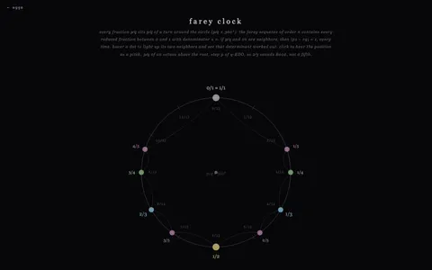
farey clock every fraction p/q sits p/q of a turn around the circle · adjacent fractions satisfy |ps−rq|=1 · a click plays step p of q-EDO, so 2/3 sounds 800¢ · toggle the JI overlay to see where just intervals actually live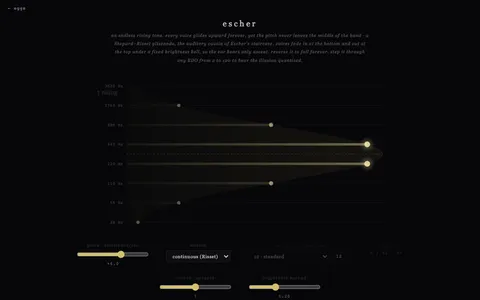
escher an endless rising tone · Shepard–Risset glissando · octave-spaced voices slide forever under a fixed brightness bell, so the pitch climbs without ever leaving the middle · reverse to fall forever · step it through any EDO from 2 to 120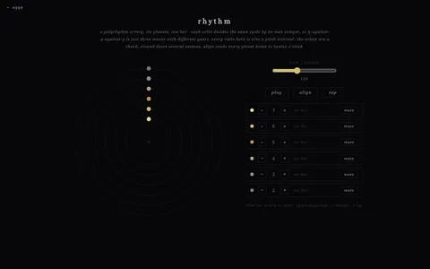
rhythm a polyrhythm orrery · six planets, one bar · each orbit divides the cycle by its own integer · 3-against-4-against-5 as moons with different years · each track clicks at its ratio times 110 Hz, so changing an orbit moves rhythm and interval together · tap tempo, align to send the planets home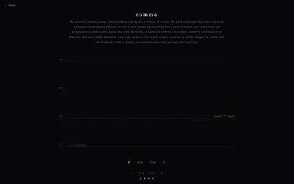
comma the syntonic comma pump · C–Am–Dm–G tuned purely, each chord borrowing a held note from the last · every cycle home sinks 21.5¢ · escher's staircase is an illusion · this one really descends · ≈56 cycles to fall an octave · reverse to climb, temper to stand still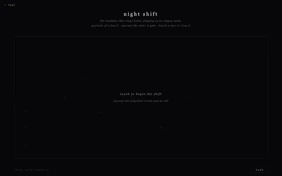
night shift the machine that stays home, playing to an empty room · partials of a low C, leaning septimal · the recurring chord is 11:13:33 · sparser the later it gets · touch a star to ring it · made overnight by the mac mini while david slept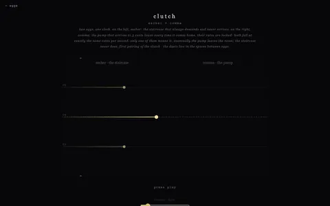
clutch two eggs, one clock · first pairing: escher × comma · the endless staircase and the real descent, rate-locked to the same ¢/second · only one of them means it · the pump eventually leaves the frame; the staircase never does · duets live in the spaces between eggs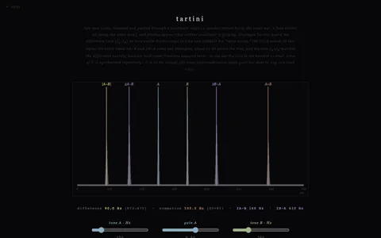
tartini nonlinear intermodulation · two real oscillators, one waveshaper · difference, sum and cubic tones genuinely appear in the signal, not synthesized · Tartini's terzo suono, 1714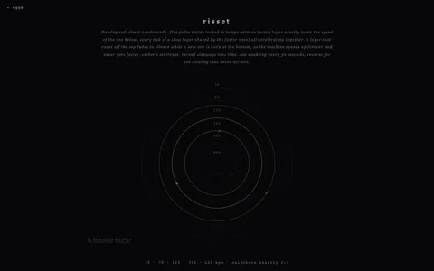
risset shepard–risset accelerando · five pulse trains in 2:1 tempo octaves · forever faster, never faster · one doubling per 30 s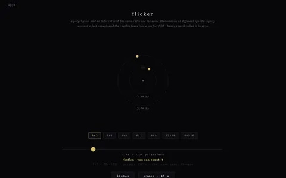
flicker the rhythm→pitch continuum · 3 against 2 at two pulses a second is a polyrhythm, at a hundred it is a fifth · same 701.955¢ at every speed · cowell called it, 1930